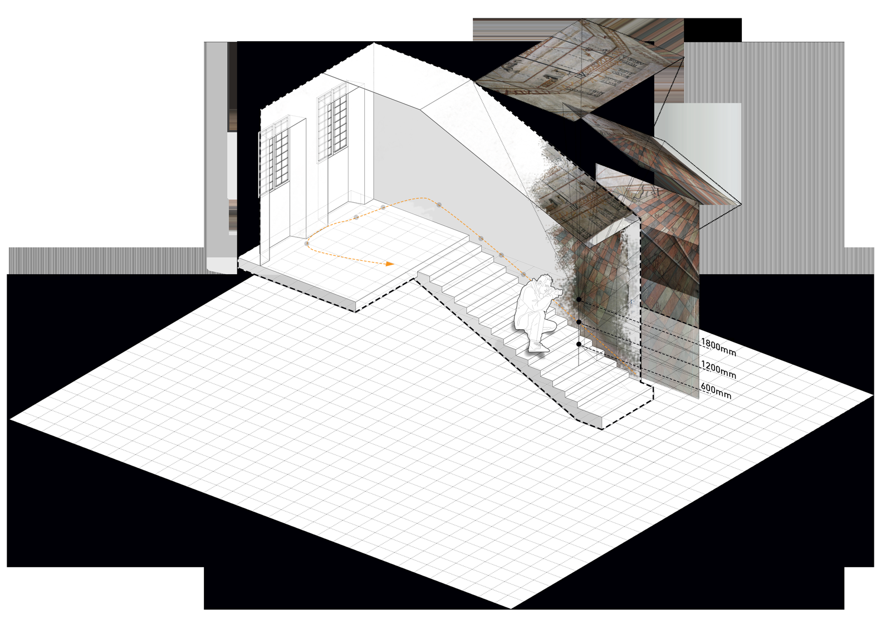
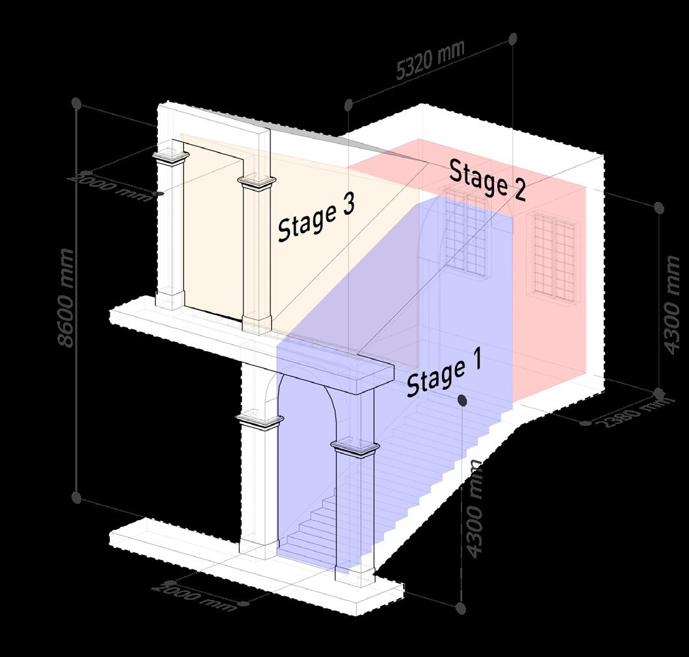
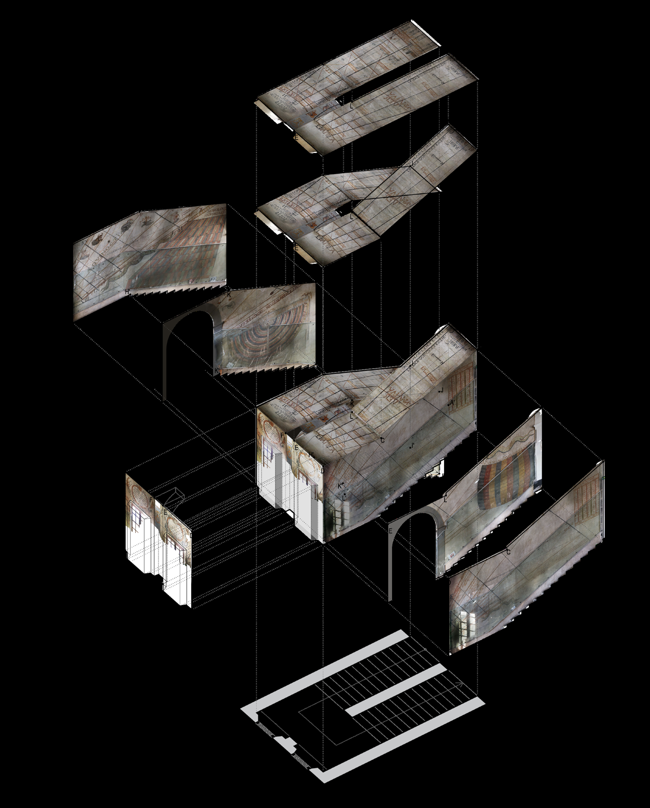
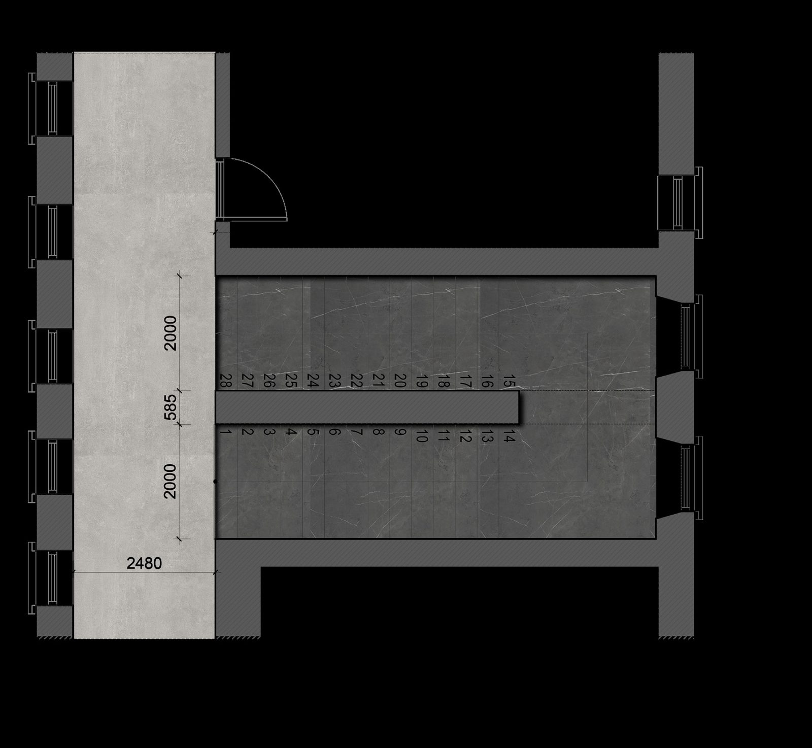

Chapter II · 3
Time budget≈ 1 hour on site, one Saturday a month.
Photos309 · ≈ 60 % overlap · 10 panoramas.
Dense cloud104 406 819 points.
Compute≈ 86 hours in Agisoft PhotoScan.
Chapter II · 3
Surveying a Room of Light
One hour a month, no tripods in the way: tape, trilateration and 309 overlapping photographs turned into a hundred-million-point model.
The room is open to the public only on the last Saturday of each month, and a visit lasts about an hour. Every method in this chapter is shaped by that limit: work fast, don't disturb the other visitors, and record every detail, because you may not get back.

iMeasuring the staircase
Two independent methods were run in parallel and then overlaid.
Direct measurement
- 15 steps per flight plus one landing;
- a typical step: riser 160 mm, tread depth 380 mm, tread width 2 050 mm;
- tape runs from each finished floor level to the landing step — about 2.5 m per side — with an average ceiling height of ~4 300 mm.
Trilateration
Eight fixed stations were set — A, B, G, H at 2 500 mm above the floor; C, D, E, F level with the landing — and as many points as possible were “spotted” from them. Measuring was split left / right so that while the guide spoke on the east side, the survey worked from the west, and vice versa. Overlaying the tape model and the trilateration model produced one dimensioned file.

iiPhotographing for photogrammetry
The stair was divided into three zones — two flights and the landing — and shot from holding points at 600, 1 200 and 1 800 mm above each step to build spherical panoramas, plus orthogonal frames straight up the central axis of the ceiling. In total 309 photographs with about 60 % overlap, yielding ten hemispherical panoramas.
iiiFrom photos to mesh
The images went into Agisoft PhotoScan Professional, which aligned them on matching points and built the model in stages:
- Sparse cloud
- 571 393 coloured points
- Dense cloud
- 104 406 819 points
- Mesh
- 20 881 363 faces
- Processing time
- ≈ 86 hours
- Export
- DXF · OBJ · MTL · 3DS

The textured mesh — every painted line, crack and repair carried on it — is the “as-found” record of the room. In Chapter II §6 it is set against the “as-intended” geometry from the ideal celestial sphere; the same mesh, cleaned and lit, becomes the interactive model.
